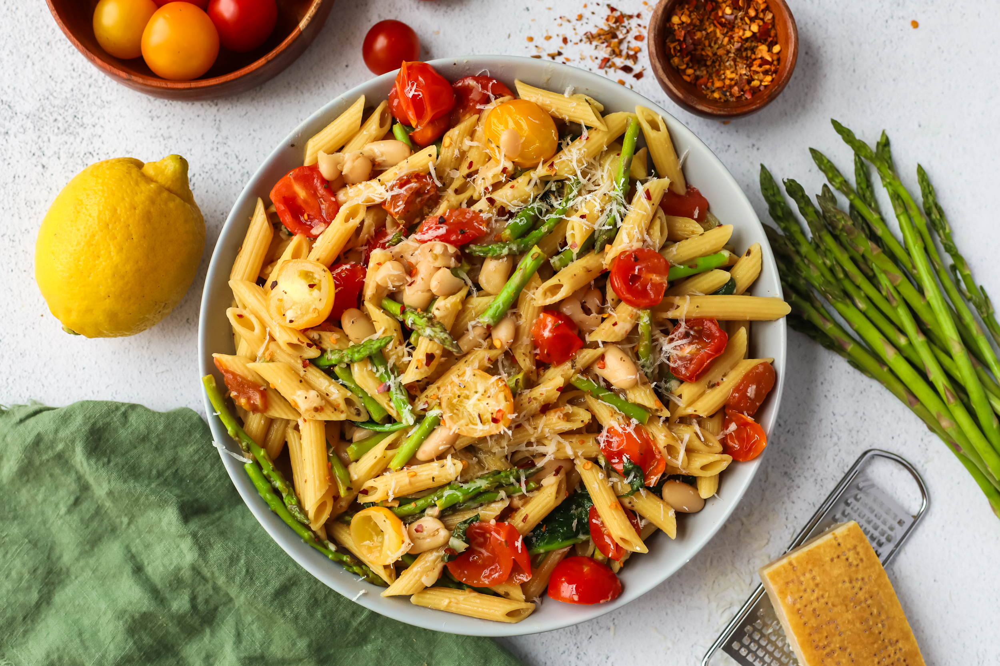

Pasta :)

Description -
If you want to make this recipe in an Instant Pot, it’s easy! Set the pressure cooker to sauté and add the olive oil, garlic, and seasonings to the pot. Sauté for one minute, then add the pasta, beans, and 3 cups of broth to your Instant Pot or pressure cooker. Seal the lid and ensure the valve is set to sealing. Press cancel to end the sauté function. Then set the Instant Pot to manually pressure cook the pasta for one minute. Allow the pressure to naturally release for two minutes, then switch the valve to release any remaining pressure.
Press cancel to end the keep warm function, then press sauté. Add the tomatoes, asparagus, spinach, lemon juice, and lemon zest. Sauté for 2-3 minutes until the vegetables are tender and the spinach is wilted. Sprinkle with Parmesan cheese and serve.
Ingredients -
- Olive oil
- Garlic
- Oregano
- Cheese
- Vegetable broth
- Red pepper
- Cherry tomatoes
- Green beans
- Pasta
Steps -
- Bake the pasta in a hot water and add some salt in that water.
- Spread some oil in a pan and pour all the vegetables tomatoes, Green beans and shallow fry them on low flaim.
- Wait for vegetables to be perfectly cooked after that add the vegetable broth.
- Make the white sauce for the pasta with milk, cheese and peppers
- After cooking the vegetables and broth add the boiled pasta in the broth
- Finally add the white sauce and serve hot pasta